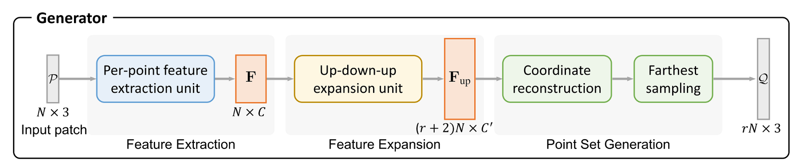
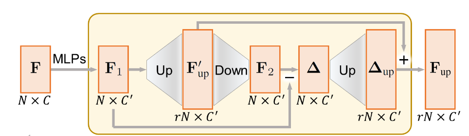
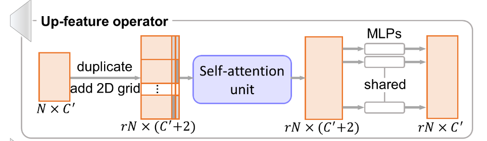
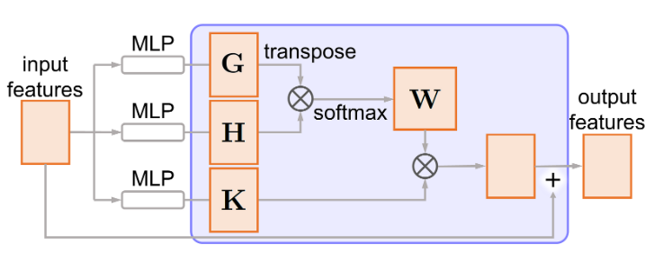
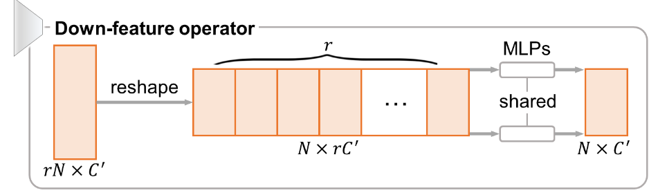
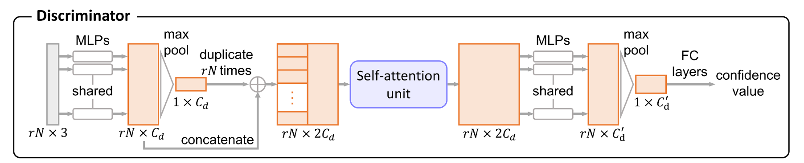

论文：PU-GAN: a Point Cloud Upsampling Adversarial Network。这篇比 AR-GCN 发表时间略早，思路也都是结合 GAN 。
方法
生成器
生成器包含了三个组件，下面一一介绍。

逐点特征提取单元（Per-point feature extraction unit）
PU-GAN 采用了 MPU 中的特征提取方法，这在 MPU 论文阅读笔记 中有详细说明。简言之，它使用了层内密集连接来复用显式信息，同时借鉴 DGCNN 在特征空间上定义邻域，无需下采样就可以得到每个点的特征。
特征扩展组件（Feature Expansion Component）
论文提出了一个自上而下的扩展单元，称为 Up-down-up Expansion Unit 。简单来说，它首先将点特征$\mathbf{F}_1$上采样为 $\mathbf{F}_{up}’$ ，然后下采样为 $\mathbf{F}_2$ ，并计算上采样前和下采样后的特征差异，记作 $\Delta$ 。然后再将 $\Delta$ 上采样为 $\Delta_{up}$ ，并和 $\mathbf{F}_{up}’$ 相加，得到最终的上采样特征 $\mathbf{F}_{up}$ 。

特征上采样

上采样组件 Up-feature operator 为了避免 PU-Net 中生成点太接近的问题，将特征复制后，对于每一个特征及其副本，在二维格网上采样向量并拼接到后面，使得每一个副本都不一样。和 MPU 不同，PU-GAN 对 FoldingNet 借鉴得更彻底。
接着引入了自注意力机制，具体如左图所示。首先将输入特征通过两个单独的密集连接层，分别得到 $\mathbf{G}$ 和 $\mathbf{H}$ ，从而得到注意力权重 $\mathbf{W}$ ：
然后通过 $\mathbf{K}$ 得到权重矩阵 $\mathbf{W}^T\mathbf{K}$ 。最后将权重矩阵和输入矩阵求和，得到输出矩阵。在这里自注意力单元不改变输入特征的尺寸。
特征下采样

下采样单元的思路则非常简单，直接将 $rN\times C’$ 的特征 reshape 为 $N\times rC’$ ，然后通过一组共享的 MLPs 将特征变回原来的尺寸 $N\times C’$ 。
点集重建组件
为了增强生成点的均匀性，PU-GAN 首先通过一组 MLPs 生成一组点坐标，然后通过最远点采样得到 $rN$ 个点。因此在上采样阶段，需要上采样到更高的倍数，论文中使用了 $(r+2)N$ 。
判别器
接着看一下判别器的组成。

对于输入的高分辨率点坐标 $rN\times 3$ ，首先通过共享 MLPs 和池化层得到全局特征 $1\times C_d$ ，并复制 $rN$ 份，和点特征 $rN\times C_d$ 拼接。通过注意力机制单元增强特征，然后再通过一组共享的 MLPs 和池化层得到全局特征，最后以一组全连接层回归置信度。若置信度接近 1，则判别器将其预测为真实数据，反之为生成数据。
损失函数
为端到端训练网络，论文设计了复合的损失函数。
对抗损失
和 AR-GCN 一样，PU-GAN 采用 LSGAN 的最小二乘损失作为对抗损失，定义如下：
均匀损失（Uniform Loss）
单独使用对抗网络难以使网络收敛，也很难生成均匀的点集。因此需要一个统一的损失来评估生成的 $\mathcal{Q}$ ，从而提高生成器的生成能力。PU-Net 使用 NUC 指标来评估点集表面的均匀性，主要思路是在物体表面放置大小相同的圆盘并统计圆盘内的点数变化差异。但这样做忽略了圆盘内点的局部混乱。
论文的方法如下。首先对 patch 进行最远点采样，得到 $M$ 个种子点，并使用球查询半径 $r_d$ 获取一系列局部点子集，记作 $S_j, j=1,2,\dots,M$ 。这里的 $r_d$ 取较小的值，使得 $S_j$ 中的点大致位于一个小局部圆盘上，面积为 $\pi r_d^2$ 。另一方面，通过测地线距离形成 patch 并标准化到单位球体当中，此时面积为 $\sim\pi 1^2$ 。因此 $S_j$ 中点的百分比应为 $p=(\pi r_d^2)/(\pi1^2)= r_d^2$ 。需要注意，此时的 patch 是标准化的，因此 $r_d<1$ 。得到 $\hat{S_j}$ 中的期望点数为 $\hat{n}=rN\times p$ 。PU-GAN 遵循卡方模型来度量 $|S_j|$ 的偏差：
为了计算局部的点混乱，对于 $S_j$ 中的每个点，找到其最近邻点的距离，记第 $k$ 个最近点的距离为 $d_{j,k}$ 。如果点是均匀分布的，那么假设 $S_j$ 完全平坦且点成六边形分布，则预期的点到邻近点距离 $\hat{d}$ 应为 $\sqrt{\frac{2\pi r_d^2}{|S_j|\sqrt{3}}}$ 。这个计算是比较粗糙的，它假设了点数等于三角形数，那么三角形面积为 $\frac{\sqrt{3}}{2}\hat{d}^2=\frac{\pi r_d^2}{|S_j|}$ ，即可推得。同样地，遵循卡方模型来度量 $d_{j,k}$ 的偏差：
根据上述定义可知，$U_{\text{imbalance}}$ 描述了非局部的分布均匀性，而 $U_{\text{clutter}}$ 描述了局部的分布均匀性，这是对 NUC 指标的改良。最终计算均匀损失为：
重建损失（Reconstruction Loss）
当然不能忘了上采样原本的目的：让生成的点位于表面上。PU-GAN 使用了 EMD 距离来衡量生成点云和实际点云的距离，记作 $\mathcal{L}_{\text{rec}}$ 。
联合损失
最终定义生成器和鉴别器的训练损失分别为：
总结
PU-GAN 最早将生成网络应用于点云上采样，在上采样以及判别器模块中结合了注意力机制加强特征融合。同时为了追求均匀分布的点，设计了能够兼顾局部和非局部点均匀性的损失函数。独特的 up-down-up 特征扩展单元被称为具有所谓的“自我校正”功能，我的理解是在上采样时扩展了特征维度，但一次扩展不一定准确，所以相当于算两遍特征。不过我不是很懂这个结构怎么被设计出来的，可能还是境界不够。